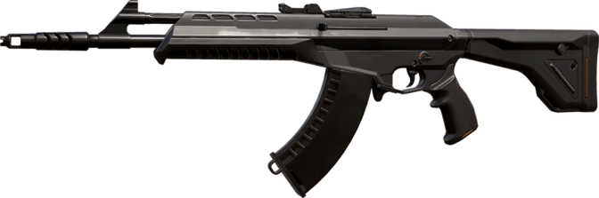

Les presentamos todas las armas del juego y los respectivos tipos de ediciones
Estas son los tipos de ediciones
| Edición | Precio de Edición |
|---|---|
| Select | 2930 VP |
| Select con Melee | 3500 VP |
| Deluxe | 4270 VP |
| Deluxe con Melee | 5100 VP |
| Standard Premium | 7100 VP |
| Premium con los 5 llaveros, banners y sprays | 8855 VP |
| Exclusive (Varian los precios) | 8700 VP |
| Exclusive (Varian los precios) | 10700 VP |
| Ultra | 9900 VP |
Este es el valor de cada RP valorado en VP
| RP | VP |
|---|---|
| 20 | 1600 |
| 40 | 2800 |
| 80 | 4800 |
Estas son las pistolas

Classic: Es la pistola de inicio que todo jugador recibe en cada ronda. La pistola es bastante débil, pero dado que el jugador comienza con el arma, puede usarse como arma inicial para rondas en las que el jugador no tiene suficiente dinero para comprar otras armas, por lo que puede ahorrar para comprar un arma más adelante en el juego. Tiene daño bajo, siendo 2-3 disparos a la cabeza, 7 al cuerpo y 8 a las piernas para matar al oponente

Shorty: Es el arma más barata que se puede comprar en el juego, con 150 créditos.
Es una escopeta semiautomática con una penetración de pared baja. El arma es muy útil en rondas económicas o incluso rondas de pistola (generalmente rondas donde el equipo no tiene mucho dinero).
Debido a que es una escopeta barata, es extremadamente útil para emboscar a un enemigo con mejores armas y luego tomar sus armas para usarlas más adelante en la ronda.

Frenzy: Es una pistola totalmente automática con un coste de 450 creditos y una capacidad de 13 balas. Hace un buen daño, normalmente con alrededor de 7-8 disparos en el cuerpo y 3 en la cabeza.
Es más efectivo a corta distancia, donde puedes rociar rápidamente al enemigo, pero puedes tocar o disparar a distancias medias y largas.
Es una gran opción para rondas económicas, especialmente si un equipo pierde la primera ronda de pistola, ya que su buen daño por bala y su bajo costo lo hacen efectivo cuando la economía del equipo es mala.

Ghost: Es un arma de mano semiautomática bastante barata con coste de 50 creditos, con buen daño y una capacidad de 15 balas. Por lo general, son 2 toques en la cabeza y 5-6 golpes en el cuerpo.
Viene equipado con un silenciador que ayuda a aumentar su precisión general y reduce el rango de audición y silencia el sonido, lo que lo hace útil para acechar. El arma es una gran pistola que se puede usar como un arma de respaldo confiable.
Su precisión por encima del promedio, buen daño y consistencia general le permiten confiar en la pistola en la mayoría de las situaciones.

Sheriff: Es el arma de mano más cara del juego y cuesta 800 créditos. Viene con un cargador pequeño y un alto daño, así como un gran retroceso. Es semiautomático.
Es extremadamente útil para rondas económicas y de pistola, debido a su costo relativamente bajo y alto daño por bala, que rivaliza con la mayoría de las pistolas. Son 4 tiros a las piernas, 3 al cuerpo y 1 a la cabeza a 0-30 metros (2 a la cabeza a 30-50 metros).
La principal desventaja de la Sheriff es su largo tiempo de extracción y su alto retroceso. Tiene el mayor retroceso de todas las pistolas, y se necesita bastante tiempo para que ese retroceso se desvanezca.
Estos son los SMGs

Stinger: Vale 950 créditos y es único por su velocidad de disparo extremadamente alta.
Tiene un daño por disparo bajo en comparación con casi todas las demás armas del juego y, además, tiene una dispersión absurdamente alta, lo que lleva a una menor precisión. Sin embargo, la stinger es muy barata y tiene un daño por segundo extremadamente alto. Puede matar fácilmente a cualquier jugador casi instantáneamente a corta distancia.
Es útil para compras cuando tu equipo no tiene mucho dinero, pero quiere disputar la ronda. La Stinger solo debe usarse a distancias cortas, que es donde brilla, superando incluso a los rifles en DPS, pero considerando la baja capacidad de 20 balas por cargador, aún es necesario para que cada disparo cuente, especialmente cuando se enfrenta a un grupo de enemigos.

Spectre: Es un subfusil ametrallador de precio moderado con coste de 1600 creditos, que ocupa el espacio de arma principal de su portador. Está equipado con un silenciador que reduce el alcance del perfil de audio del arma. En comparación con el Stinger, es sustancialmente más preciso, patea considerablemente menos, posee una capacidad de perforación de la cubierta ligeramente mayor y tiene una capacidad de cargador más alta (30 en lugar de 20). Sin embargo, su daño por disparo ligeramente más bajo y su velocidad de disparo reducida hacen que su producción total sea estadísticamente más baja.
El arma es una compra de fuerza útil si su equipo está corto de dinero, y es notablemente efectivo a corta distancia, especialmente en objetivos sin armadura. Su sonido de disparo silenciado también puede ser útil para emboscar a los enemigos, ya que es posible que los jugadores menos alertas no atraigan su atención con tus disparos. Sin embargo, a medida que los jugadores adquieren rifles de mayor daño, pierde su efectividad más adelante en el juego, donde su rol lo cumple mejor el rifle de asalto Phantom, que, como el Spectre, está suprimido y de manera diferente, tiene el potencial de matar a un enemigo en un solo disparo a la cabeza (dado que el objetivo carece de suficientes puntos de armadura), y tiene un rango efectivo mucho mayor con una mejor capacidad de penetración.
Estos son los rifles

Bulldog: Es un rifle completamente automático y es el más barato de los tres rifles completamente automáticos del juego. Su cargador contiene 24 balas. Tiene una buena velocidad de disparo y un disparo alternativo de ráfagas de 3 balas. Es un toque de 2 en la cabeza y 5 en el cuerpo o las piernas. El Bulldog también tiene ADS, como otros rifles.
Es único por tener un costo relativamente bajo en comparación con los otros rifles completamente automáticos en 2050. Esto lo convierte en una compra de fuerza útil para rondas económicas si su equipo carece de dinero. Sin embargo, cuesta significativamente más que los SMG.
También tiene una ráfaga de 3 rondas, a diferencia de otros rifles, que puede ser bueno para espacios reducidos. Sin embargo, la dispersión aumenta significativamente a distancias medias y largas, por lo que, de lo contrario, querrá usar su fuego principal.
El ADS es bueno para apoyar un asalto en un sitio o mantener un sitio, ya que aumenta la puntería y reduce el retroceso y la dispersión (en general, hace que el arma sea más precisa).

Guardian: Es un rifle semiautomático que tiene un precio moderado de 2250 en comparación con otros rifles.
Es único por ser el único rifle semiautomático y tener un zoom de 1.5x, así como el mayor daño por bala en comparación con cualquier otro rifle.
Aunque es semiautomático, aún puede disparar decentemente rápido a 5.25 rondas por segundo. The Guardian brilla en un aspecto, su daño por bala. Es un 4 a las piernas, 3 al cuerpo y 1 a la cabeza en cualquier rango.
El rifle brilla en el lado defensivo, ya que con su daño extremo por bala y zoom de 1.5x lo convierte en un rifle peligroso para mirar, especialmente porque es un golpe garantizado en la cabeza.

Phantom: Es un rifle totalmente automático con 2.900 créditos. Hace menos daño por bala que su contraparte, el Vandal, pero lo compensa con su precisión superior a la media, baja dispersión y un silenciador.
La Phantom viene equipado con una alta cadencia de fuego y un silenciador que lo hace extremadamente útil para emboscar, ya que a distancias más cortas, el rifle es una muerte instantánea en la cabeza. En rangos más largos, es un toque de 6 en las piernas, 5 en el cuerpo y 2 en la cabeza.
La Phantom generalmente se ve en rondas de armas debido a su precio más alto que los SMG u otros rifles. El ADS es ideal para mantener sitios fijos y disminuir aún más su retroceso y dispersión para convertirlo en un rifle completamente automático extremadamente preciso.

Vandal: Es un rifle totalmente automático que cuesta 2900 créditos. Es la contraparte del Phantom y es único por su alto DPS en cualquier rango. Tiene la capacidad de matar a los oponentes con un tiro en la cabeza. Al igual que otros rifles, uno puede apuntar hacia abajo (ADS) para reducir la dispersión a costa de la velocidad de disparo.
Al ser totalmente automático sacrifica una mayor dispersión y retroceso por un rango de daño lineal; independientemente de la distancia, siempre matará con cinco disparos en las piernas, cuatro en el cuerpo y un disparo en la cabeza.
Debido a su alto precio, la Vandal se ve principalmente en rondas de armas (rondas en las que ambos equipos tienen dinero). El ADS de Vandal se puede usar para mantener un sitio al reducir el retroceso y la propagación del arma, y se puede combinar con el daño extremo a distancia que puede producir Vandal.
Estas son las escopetas

Bucky: Es una de las dos escopetas disponibles en Valorant. Bucky tiene capacidad para 5 balas y es un arma extremadamente efectiva a corta distancia, que es cuando la mayor parte de la metralla del proyectil golpea el objetivo.
Por un disparo, una muerte; a corta distancia (0-8m) deberías disparar con el click izquierdo y deberías usar el click derecho para otras distancias. Por ejemplo, podrás disparar a enemigos sin escudos dentro de 8-12 m con click derecho.
Su coste ronda los 850, lo que la hace efectiva para cuando estan en una ronda economica y estan jugando en algun lugar del site escondidos.

Judge: Es la escopeta más cara de Valorant, con 1850 créditos. Es una escopeta totalmente automática con una penetración media en la pared.
A muy corta distancia y con la puntería adecuada, podrás eliminar al oponente con un solo disparo. Tendrás que golpear el cuerpo dos veces, siempre que el objetivo haya recibido el daño total.
Estos son los francotiradores

Marshal: es el francotirador más barato del juego, con un coste de 950 creditos. Especialmente es bueno después de que ganaste la ronda de pistola y quieres matar y guardar tus créditos en lugar de comprar rifles. Puedes disparar a los enemigos sin escudos con el cuerpo y si forzaron con escudos, aún puedes disparar un tiro a la cabeza o dos tiros al cuerpo.

El Operator es un rifle de francotirador de alto costo y el arma más cara del juego, con un precio de 4700 creditos. Como francotirador, tiene una mira con dos configuraciones de zoom en su modo de disparo alternativo que tiene una precisión perfecta cuando está parado. La precisión de disparo principal del operador, por otro lado, es extremadamente imprecisa.
El poder de la Operator proviene de sus balas de alto daño, pudiendo matar instantáneamente a cualquier enemigo con un solo disparo al cuerpo, aunque con su baja cadencia de fuego, cada disparo fallido tiene un costo. En comparación con el Marshal, que solo puede matar instantáneamente a los enemigos con escudo con disparos a la cabeza, el operator también es una buena opción para eliminar enemigos con disparos a traves de la pared debido a su mayor penetración.
Estas son las ametralladoras

Ares: es una ametralladora de coste medio, que ronda los 1600 creditos. Como ametralladora, es más efectiva como herramienta defensiva para mantener un sitio o cuando se usa para matar con golpes de pared debido a su alta penetración, velocidad de disparo y capacidad del cargador. Sin embargo, su menor movilidad y mayores velocidades de equipo los hacen menos adecuados para espiar o ingresar a sitios, algo que los SMG ofrecen mejor a ese precio.

Vale 3.200 créditos y es una de las mas potentes del juego. Esto puede convertirlo en un gran arma, debido a la falta de necesidad de recargar. Agregue el hecho de que el daño de penetración de la pared es bastante bueno, y tiene un arma letal.
Cuchillo tactico o melee